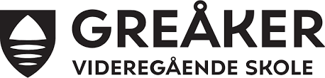

Våre verdier er engasjement, raushet, kreativitet, likeverd og mot.
Fremtidens skole handler om å bygge en skole som holder på engasjementet, både hos elever og lærere.
Skolens samfunnsoppdrag blir viktigere og viktigere: Alle skal få like muligheter. Det er de unge som skal bygge landet videre, og dermed må forberedes med et sett verdier og verktøy for å møte framtiden.
I den internasjonale skoleforskningen er begrepet «added value» en gjennomgangsmelodi. I den sammenheng mener vi fremtidens skole handler om å forberede elever på et arbeidsliv som ennå ikke er skapt og til en hverdag og et samfunn der demokrati, likeverd og aktiv deltagelse er godt forankret hos oss alle.
Greåker skal med andre ord være den beste skolen for de elever vi til enhver tid har.
hentet fra: https://viken.no/greaker-vgs/om-skolen/visjon-og-verdier/